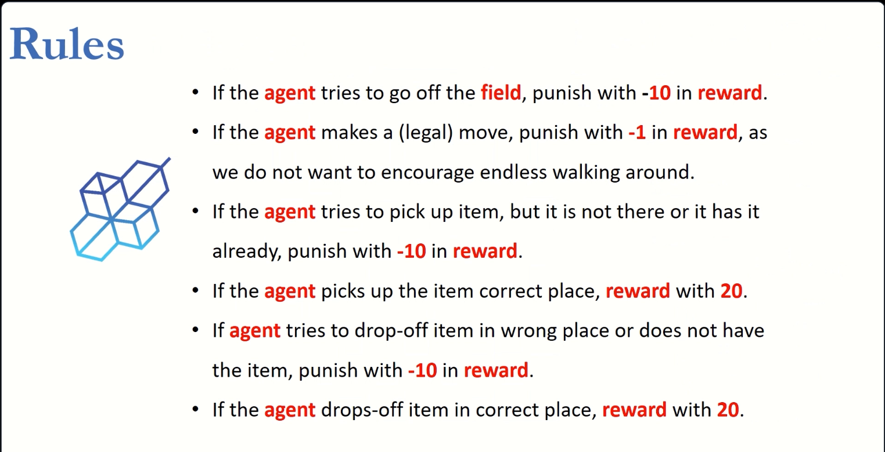

Finite Markov Decision Processes (MDPs)
That is what ChatGPT would answer to a 5-year-old kid. Alright, let’s imagine you have a little robot friend named Robo. Robo likes to explore and do different things, but Robo doesn’t always know what to do next. A Markov Decision Process (MDP) is like giving Robo a set of rules to help it decide what to do next based on where it is and what it knows.
Imagine Robo is in a room full of toys. Each toy is like a different choice Robo can make, like playing with blocks or reading a book. But Robo can’t see the whole room at once, so it has to decide what to do based on what it can see and remember.
In an MDP, Robo learns from its past experiences. If it finds that playing with blocks usually makes it happy, it’s more likely to choose that again next time. But if it tries reading a book and doesn’t like it, it might choose something else next time.
So, a Markov Decision Process helps Robo make decisions by learning from what it’s done before and what it can see around it, kind of like how you learn from playing with different toys and remembering which ones you like best.
The Agent–Environment Interface
Example 1 A mobile robot has the job of collecting empty soda cans in an office environment. It has sensors for detecting cans, and an arm and gripper that can pick them up and place them in an onboard bin; it runs on a rechargeable battery. The robot’s control system has components for interpreting sensory information, for navigating, and for controlling the arm and gripper. High-level decisions about how to search for cans are made by a reinforcement learning agent based on the current charge level of the battery. To make a simple example, we assume that only two charge levels can be distinguished, comprising a small state set \(\mathcal{S} = \{\texttt{high}, \texttt{low} \}\). In each state, the agent can decide whether to
- actively search for a can for a certain period of time,
- remain stationary and wait for someone to bring it a can, or
- head back to its home base to recharge its battery.
When the energy level is high, recharging would always be foolish h, so we do not include it in the action set for this state. The action sets are then \(\mathcal{A}(\texttt{high}) = \{\texttt{search}, \texttt{wait}\}\) and \(\mathcal{A}(\texttt{low}) = \{\texttt{search}, \texttt{wait}, \texttt{recharge}\}\).
The rewards are zero most of the time, but become positive when the robot secures an empty can, or large and negative if the battery runs all the way down. The best way to find cans is to actively search for them, but this runs down the robot’s battery, whereas waiting does not. Whenever the robot is searching, the possibility exists that its battery will become depleted. In this case the robot must shut down and wait to be rescued (producing a low reward).
If the energy level is high, then a period of active search can always be completed without risk of depleting the battery. A period of searching that begins with a high energy level leaves the energy level high with probability \(\alpha\) and reduces it to low with probability \(1 - \alpha\). On the other hand, a period of searching undertaken when the energy level is low leaves it low with probability \(\beta\) and depletes the battery with probability \(1 - \beta\). In the latter case, the robot must be rescued, and the battery is then recharged back to high. Each can collected by the robot counts as a unit reward, whereas a reward of \(-3\) results whenever the robot has to be rescued. Let \(r_{\texttt{search}}\) and \(r_{\texttt{wait}}\), with \(r_{\texttt{search}} > r_{\texttt{wait}}\), denote the expected numbers of cans the robot will collect (and hence the expected reward) while searching and while waiting respectively. Finally, suppose that no cans can be collected during a run home for recharging, and that no cans can be collected on a step in which the battery is depleted. This system is then a finite MDP, and we can write down the transition probabilities and the expected rewards, with dynamics as indicated in the table on the left:

Exercise 1 Give a table analogous to that in (p.53, Ex. 3.3, Sutton and Barto 2018), but for \(p(s_0 , r |s, a)\). It should have columns for \(s\), \(a\), \(s_0\) , \(r\), and \(p(s_0 , r |s, a)\), and a row for every 4-tuple for which \(p(s_0 , r |s, a) > 0\).
Goals and Rewards
In reinforcement learning, the reward hypothesis serves as the foundation for defining the objectives of an agent operating within an environment. According to this hypothesis, the agent’s goal can be represented by the maximization of the expected cumulative reward over time, based on scalar feedback signals received from the environment.
Key Points of the Reward Hypothesis:
Reward as a Scalar Signal: At every time step, the environment provides the agent with a simple numerical signal, \((R_t \in \mathbb{R}\), which represents the immediate reward based on the agent’s actions and the current state of the environment. This reward acts as feedback for the agent, helping it learn and adjust its strategy to achieve its ultimate goal.
Maximizing Cumulative Reward: The agent’s goal is not just to maximize the immediate reward, but to focus on the long-term sum of rewards, known as the cumulative reward. This ensures that the agent does not become short-sighted by only pursuing short-term benefits, but rather seeks strategies that maximize its total reward across time.
Expected Value of the Reward: Since reinforcement learning involves interaction in environments that can be stochastic (involving randomness or uncertainty), the agent aims to maximize the expected value of the cumulative reward, accounting for different possible future states and outcomes. This means the agent is interested in the average cumulative reward it would obtain over many possible sequences of interactions, rather than specific individual outcomes.
Formalizing Goals and Purposes: According to the reward hypothesis, all goals, objectives, or purposes of the agent can be quantified by maximizing this cumulative scalar signal (reward). In other words, the “purpose” of the agent is simply to optimize the feedback it receives in the form of rewards, and this concept encapsulates everything the agent is designed to achieve.
Importance in Reinforcement Learning:
This hypothesis is central to how reinforcement learning problems are structured. It reduces complex goals and objectives into a single, scalar value (the reward) that the agent can track and optimize over time. This abstraction makes it possible to design agents that can handle a wide variety of tasks, as long as those tasks can be expressed in terms of rewards provided by the environment.
Returns and Episodes
To formalize the objective of learning in reinforcement learning, we introduce the concept of return. The return, denoted \(G_t\), is a function of the future rewards that the agent will receive after time step \(t\). The agent aims to maximize the expected return to achieve its goal. Let’s break down this formalization step by step:
1. The Reward Sequence:
At each time step \(t\), the agent receives a reward \(R_{t+1}, R_{t+2},\dots,\) as a result of interacting with the environment. This sequence of rewards represents the feedback the agent receives over time based on its actions.
2. Defining the Return:
The return at time step \(t\), denoted \(G_t\), is the total accumulated reward from time step \(t\) onward. In reinforcement learning, the return can be defined in different ways, but it generally involves summing the future rewards, often discounted to account for the uncertainty or diminishing value of rewards received further in the future.
The undiscounted return would simply be the sum of all future rewards: \[ G_t = R_{t+1} + R_{t+2} + R_{t+3} + \cdots = \sum_{k=0}^{\infty} R_{t+k+1} \] This sum may be infinite if the task never ends, which can be problematic. Thus, in many cases, a discount factor is applied to weight future rewards less than immediate rewards.
Likewise if the MDP has finite horizont \(T\) then \[G_t = R_{t+1} + R_{t+2} + R_{t+3} + \cdots + R_{T}\]
3. Discounted Return:
To address this issue, we introduce a discount factor \(\gamma\), where \(0\leq \gamma \leq 1\). The discount factor controls how much emphasis is placed on future rewards. When \(\gamma\) is close to 1, future rewards are considered nearly as valuable as immediate rewards. When \(\gamma\) is closer to 0, the agent focuses more on immediate rewards.
The discounted return is defined as: \[ G_t = R_{t+1} + \gamma R_{t+2} + \gamma^2 R_{t+3} + \dots = \sum_{k=0}^{\infty} \gamma^k R_{t+k+1} \] Here, each future reward is multiplied by ( ^k ), where ( k ) is the number of time steps into the future. This ensures that the agent values immediate rewards more highly than rewards far into the future, which is often desirable in practical applications.
4. Maximizing the Expected Return:
Since the environment in reinforcement learning is often stochastic, the agent cannot guarantee a specific sequence of rewards, but it can aim to maximize the expected return. The expected return is the average return the agent would obtain by following a specific policy \(\pi\), which defines the agent’s behavior.
Formally, the agent’s objective is to maximize the expected return: \[ \mathbb{E}[G_t | \pi] = \mathbb{E}\left[\sum_{k=0}^{\infty} \gamma^k R_{t+k+1} \Big| \pi\right] \] where \(\pi\) is the policy being followed. This equation tells us that the agent should choose actions in a way that maximizes the long-term expected reward, considering both immediate and future rewards.
5. Two Types of Tasks:
- Finite-Horizon Tasks: These tasks have a fixed time limit, and the agent’s goal is to maximize the sum of rewards within that time limit. In such cases, the discount factor \(\gamma\) may not be necessary, and the return is just the sum of the finite rewards received before the task ends.
- Infinite-Horizon Tasks: In tasks that continue indefinitely, the discount factor \(\gamma\) ensures that the return remains finite by reducing the impact of rewards far into the future.
Conclusion:
Thus, in reinforcement learning, the agent’s formal objective is to maximize the expected return, \(\mathbb{E}[G_t]\), where the return \(G_t\) is the discounted sum of future rewards. The use of the discount factor \(\gamma\) helps the agent focus more on immediate rewards, while still considering future rewards to some degree. This formalization ensures that the agent’s behavior is guided not just by immediate rewards but by a balanced approach to long-term success.
Unified Notation for Episodic and Continuing Tasks
Policies and Value Functions

We use the following class to simulate the pick and drop game accordingly the above figure and rules.
pick_and_drop_game.py
class Field:
def __init__(self, size, item_pickup, item_dropout, start_position):
self.size = size
self.item_pickup = item_pickup
self.item_dropout = item_dropout
self.position = start_position
self.item_in_car = False
def get_number_of_states(self):
return self.size * self.size * self.size * self.size * 2
def get_state(self):
state = self.position[0] * self.size * self.size * self.size * 2
state = state + self.position[1] * self.size * self.size * 2
state = state + self.item_pickup[0] * self.size * 2
state = state + self.item_pickup[1] * 2
if self.item_in_car:
state = state + 1
return state
def make_action(self, action):
(x, y) = self.position
if action == 0: # down
if y == self.size - 1:
return -10, False
else:
self.position = (x, y + 1)
return -1, False
elif action == 1: # up
if y == 0:
return -10, False
else:
self.position = (x, y - 1)
return -1, False
elif action == 2: # left
if x == 0:
return -10, False
else:
self.position = (x - 1, y)
return -1, False
elif action == 3: # right
if x == self.size - 1:
return -10, False
else:
self.position = (x + 1, y)
return -1, False
elif action == 4: # pickup
if self.item_in_car:
return -10, False
elif self.item_pickup != (x, y):
return -10, False
else:
self.item_in_car = True
return 20, False
elif action == 5: # dropout
if not self.item_in_car:
return -10, False
elif self.item_dropout != (x, y):
self.item_pickup = (x, y)
self.item_in_car = False
return -10, False
else:
self.item_in_car = False
return 20, TrueTo illustrate how works this class
test_pick_and_drop_game.py
from pick_and_drop_game import Field
size = 10
item_pickup = (0, 0)
item_dropout = (9, 9)
start_position = (9, 0)
if __name__ == '__main__':
field = Field(size, item_pickup, item_dropout, start_position)
print(field.position)
# manual solution
field.make_action(2)
field.make_action(2)
field.make_action(2)
field.make_action(2)
field.make_action(2)
field.make_action(2)
field.make_action(2)
field.make_action(2)
field.make_action(2)
# pick
field.make_action(4)
field.make_action(0)
field.make_action(0)
field.make_action(0)
field.make_action(0)
field.make_action(0)
field.make_action(0)
field.make_action(0)
field.make_action(0)
field.make_action(0)
field.make_action(3)
field.make_action(3)
field.make_action(3)
field.make_action(3)
field.make_action(3)
field.make_action(3)
field.make_action(3)
field.make_action(3)
field.make_action(3)
field.make_action(5)Now we implement a random but naive solution
pick_and_drop_naive_random_solution.py
from matplotlib import pyplot as plt
from pick_and_drop_game import Field
import random
import numpy as np
def random_solution():
size = 10
item_pickup = (0, 0)
item_dropout = (9, 9)
start_position = (9, 0)
field = Field(size, item_pickup, item_dropout, start_position)
done = False
steps = 0
while not done:
action = random.randint(0, 5)
reward, done = field.make_action(action)
steps = steps + 1
return steps
if __name__ == '__main__':
steps = random_solution()
print(steps)
sampling_size = 100
sample = [random_solution() for _ in range(sampling_size)]
sample = np.array(sample)
no_steps_mean = sample.mean()
print('Mean of # steps for reach goal {:n}'.format(no_steps_mean))
plt.show()Next we apply the \(Q-\)learning algorithm for impove the above solution.
pick_and_drop_q_learning_solution.py
def q_learning_solution():
epsilon = 0.1
alpha = 0.1
gamma = 0.6
field = Field(size, item_pickup, item_drop_out, start_position)
done = False
steps = 0
while not done:
state = field.get_state()
if random.uniform(0, 1) < epsilon:
action = random.randint(0, 5) # Explore
else:
action = np.argmax(q_table[state]) # Exploit
reward, done = field.make_action(action)
new_state = field.get_state()
new_state_max = np.max(q_table[new_state])
q_table[state, action] = \
(1 - alpha) * q_table[state, action] \
+ alpha * (
reward + gamma * new_state_max
- q_table[state, action]
)
steps = steps + 1
return steps
size = 10
item_pickup = (0, 0)
item_drop_out = (9, 9)
start_position = (9, 0)
field = Field(size, item_pickup, item_drop_out, start_position)
number_of_states = field.get_number_of_states()
number_of_actions = 6
q_table = np.zeros((number_of_states, number_of_actions))
epsilon = 0.1
alpha = 0.1
gamma = 0.6
n_training = 100000
# Training phase
for _ in range(n_training):
field = Field(size, item_pickup, item_drop_out, start_position)
done = False
while not done:
state = field.get_state()
if random.uniform(0, 1) < epsilon:
action = random.randint(0, 5) # Explore
else:
action = np.argmax(q_table[state]) # Exploit
reward, done = field.make_action(action)
new_state = field.get_state()
new_state_max = np.max(q_table[new_state])
# q_learning iteration as ascendant grad
q_table[state, action] = \
(1.0 - alpha) * q_table[state, action] \
+ alpha * (
reward + gamma * new_state_max - q_table[state, action]
)
q_learning_sampling = [q_learning_solution() for _ in range(10000)]
fig, ax = plt.subplots()
ax.hist(q_learning_sampling, bins=100)
ax.set_title('distribution of the No. of steps with the Q-Learning sol')
ax.set_xlabel('No. of steps')
ax.set_ylabel('Count')
fig.savefig("histogram_q_learning_solution.png")
plt.show()Example 2 (Gridworld)
gridworld.py
import matplotlib
import matplotlib.pyplot as plt
import numpy as np
from matplotlib.table import Table
matplotlib.use('Agg')
WORLD_SIZE = 5
A_POS = [0, 1]
A_PRIME_POS = [4, 1]
B_POS = [0, 3]
B_PRIME_POS = [2, 3]
DISCOUNT = 0.9
# left, up, right, down
ACTIONS = [np.array([0, -1]),
np.array([-1, 0]),
np.array([0, 1]),
np.array([1, 0])]
ACTIONS_FIGS = ['←', '↑', '→', '↓']
ACTION_PROB = 0.25
def step(state, action):
if state == A_POS:
return A_PRIME_POS, 10
if state == B_POS:
return B_PRIME_POS, 5
next_state = (np.array(state) + action).tolist()
x, y = next_state
if x < 0 or x >= WORLD_SIZE or y < 0 or y >= WORLD_SIZE:
reward = -1.0
next_state = state
else:
reward = 0
return next_state, reward
def draw_image(image):
fig, ax = plt.subplots()
ax.set_axis_off()
tb = Table(ax, bbox=[0, 0, 1, 1])
nrows, ncols = image.shape
width, height = 1.0 / ncols, 1.0 / nrows
# Add cells
for (i, j), val in np.ndenumerate(image):
# add state labels
if [i, j] == A_POS:
val = str(val) + " (A)"
if [i, j] == A_PRIME_POS:
val = str(val) + " (A')"
if [i, j] == B_POS:
val = str(val) + " (B)"
if [i, j] == B_PRIME_POS:
val = str(val) + " (B')"
tb.add_cell(i, j, width, height, text=val,
loc='center', facecolor='white')
# Row and column labels...
for i in range(len(image)):
tb.add_cell(i, -1, width, height, text=i+1, loc='right',
edgecolor='none', facecolor='none')
tb.add_cell(-1, i, width, height/2, text=i+1, loc='center',
edgecolor='none', facecolor='none')
ax.add_table(tb)
def draw_policy(optimal_values):
fig, ax = plt.subplots()
ax.set_axis_off()
tb = Table(ax, bbox=[0, 0, 1, 1])
nrows, ncols = optimal_values.shape
width, height = 1.0 / ncols, 1.0 / nrows
# Add cells
for (i, j), val in np.ndenumerate(optimal_values):
next_vals=[]
for action in ACTIONS:
next_state, _ = step([i, j], action)
next_vals.append(optimal_values[next_state[0],next_state[1]])
best_actions=np.where(next_vals == np.max(next_vals))[0]
val=''
for ba in best_actions:
val+=ACTIONS_FIGS[ba]
# add state labels
if [i, j] == A_POS:
val = str(val) + " (A)"
if [i, j] == A_PRIME_POS:
val = str(val) + " (A')"
if [i, j] == B_POS:
val = str(val) + " (B)"
if [i, j] == B_PRIME_POS:
val = str(val) + " (B')"
tb.add_cell(i, j, width, height, text=val,
loc='center', facecolor='white')
# Row and column labels...
for i in range(len(optimal_values)):
tb.add_cell(i, -1, width, height, text=i+1, loc='right',
edgecolor='none', facecolor='none')
tb.add_cell(-1, i, width, height/2, text=i+1, loc='center',
edgecolor='none', facecolor='none')
ax.add_table(tb)
def figure_3_2():
value = np.zeros((WORLD_SIZE, WORLD_SIZE))
while True:
# keep iteration until convergence
new_value = np.zeros_like(value)
for i in range(WORLD_SIZE):
for j in range(WORLD_SIZE):
for action in ACTIONS:
(next_i, next_j), reward = step([i, j], action)
# bellman equation
new_value[i, j] += \
ACTION_PROB * (
reward + DISCOUNT * value[next_i, next_j]
)
if np.sum(np.abs(value - new_value)) < 1e-4:
draw_image(np.round(new_value, decimals=2))
plt.savefig('../images/figure_3_2.png')
plt.close()
break
value = new_value
def figure_3_2_linear_system():
'''
Here we solve the linear system of equations to find the exact solution.
We do this by filling the coefficients for each of the states with their respective right side constant.
'''
A = -1 * np.eye(WORLD_SIZE * WORLD_SIZE)
b = np.zeros(WORLD_SIZE * WORLD_SIZE)
for i in range(WORLD_SIZE):
for j in range(WORLD_SIZE):
s = [i, j] # current state
index_s = np.ravel_multi_index(s, (WORLD_SIZE, WORLD_SIZE))
for a in ACTIONS:
s_, r = step(s, a)
index_s_ = np.ravel_multi_index(s_, (WORLD_SIZE, WORLD_SIZE))
A[index_s, index_s_] += ACTION_PROB * DISCOUNT
b[index_s] -= ACTION_PROB * r
x = np.linalg.solve(A, b)
draw_image(np.round(x.reshape(WORLD_SIZE, WORLD_SIZE), decimals=2))
plt.savefig('../images/figure_3_2_linear_system.png')
plt.close()
def figure_3_5():
value = np.zeros((WORLD_SIZE, WORLD_SIZE))
while True:
# keep iteration until convergence
new_value = np.zeros_like(value)
for i in range(WORLD_SIZE):
for j in range(WORLD_SIZE):
values = []
for action in ACTIONS:
(next_i, next_j), reward = step([i, j], action)
# value iteration
values.append(reward + DISCOUNT * value[next_i, next_j])
new_value[i, j] = np.max(values)
if np.sum(np.abs(new_value - value)) < 1e-4:
draw_image(np.round(new_value, decimals=2))
plt.savefig('../images/figure_3_5.png')
plt.close()
draw_policy(new_value)
plt.savefig('../images/figure_3_5_policy.png')
plt.close()
break
value = new_value
if __name__ == '__main__':
figure_3_2_linear_system()
figure_3_2()
figure_3_5()